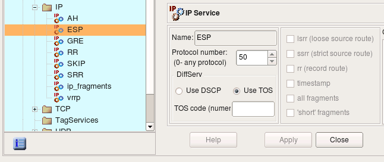
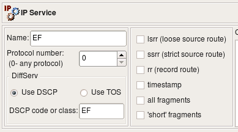
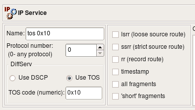
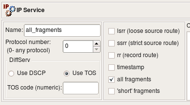
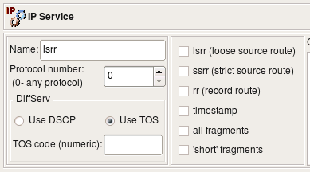
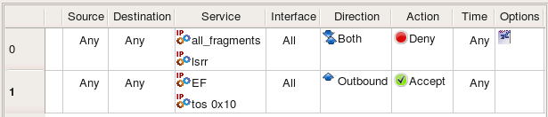
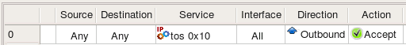
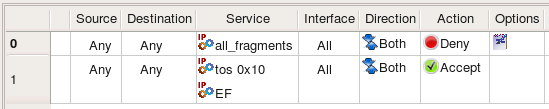

http://www.fwbuilder.org
| Author: vadim@fwbuilder.org http://www.fwbuilder.org |
This article continues the series of articles on Fireall Builder, a graphical firewall configuration and management tool that supports many Open Source firewall platforms as well as Cisco IOS access lists and Cisco ASA (PIX). Firewall Builder was introduced on this site earlier with articles Getting Started With Firewall Builder, Using Built-In Revision Control In Firewall Builder, Using Built-in Policy Installer in Firewall Builder, Using Firewall Object In Firewall Builder. This article demonstrates how you can work with IP Service object in Firewall Builder.
More information on Firewall Builder, pre-built binary packages and source code, documentation and Firewall Builder Cookbook can be found on the project web site at www.fwbuilder.org. Watch Project Blog for announcements and articles on all aspects of using Firewall Builder.
In Firewall Builder, service objects represent IP, ICMP, TCP, and UDP services such as "host unreachable" in ICMP, HTTP in TCP, GRE in IP, or DNS in UDP. Firewall Builder provides service objects for over a hundred of well-known and frequently used services in ICMP (IP protocol number 1), TCP (IP protocol number 6), and UDP (IP protocol number 17).
The IP service object describes protocols that are not ICMP, TCP, or UDP. (ICMP, TCP, and UDP have their own service objects.) An IP protocol is defined by the 8-bit field in the IP packet header. The screenshot below represents the ESP object (Encapsulating Security Payload, part of the IPSEC protocol family) which uses the IP protocol number 50.
Note: Protocol numbers are assigned by IANA; one can look up the number for a par ticular protocol at the following URL: http://www.iana.org/assignments/protocol-numbers/
Besides the protocol number, the header of the IP packet also has a field called "options" which is a variable-length list of optional information for the packet. Not all firewalls can examine options, and those that can usually have certain limitations as to what options they can match against. Firewall Builder tries to provide controls for many popular options supported by the most sophisticated firewalls. Not all options supported by Firewall Builder are supported by all target firewall platforms:
Support for IP options and fragmentation on various firewall platforms
| Firewall | lsrr | ssrr | rr | ttimestamp | all fragments | "short" packets |
|---|---|---|---|---|---|---|
| iptables | + | + | + | + | + | - |
| ipfilter | - | + | + | + | + | + |
| pf | - | - | - | - | + | - |
| Cisco PIX | - | - | - | - | - | - |
Normally IP routing is dynamic with each router making decisions about which next hop router to send the packet to. However, another option exists where the sender can choose the route. In the case of the Loose Source Route, the sender (host) can specify a list of routers the packet must traverse, but it may also pass through other routers between any two addresses in the list. The Strict Source Route works very much the same way, except the packet must traverse only through the specified addresses. Source routing can potentially be used to reach hosts behind the firewall even if these hosts use private IP addresses which normally are not reachable over the Internet.
This option causes every router that handles the packet on the way to add its IP address to a list in the options field. This option is used by the ping utility when it is called with the "-R" command line switch; it can potentially be exploited to discover the internal network addressing and layout behind the firewall. Although the risk is low, some firewall administrators prefer to block packets with this option set.
This option tells routers that handle the packet to record their timestamps and sometimes addresses (like in the case of the record route option). This option is seldom used, but can potentially be exploited to gather information about the protected network, so some firewall administrators prefer to block packets with this option set.
IP packets may sometimes become fragmented. This happens if the original datagram is larger than what a physical network layer can transmit. The IP packet header has special fields (called "Flags" and "Fragmentation Offset") that detect fragmented packets and help reassemble them. Many firewalls can check these bits as well. Certain combinations of flags and fragmentation offsets can never happen during a normal operation but were seen to be used by attackers. Firewall Builder provides two options for most commonly used cases related to packet fragmentation: the ’all fragments’ option matches the second and further fragments, while the ’short’ option is used to match packets that are too short to contain even a complete IP header.
Standard IP Service objects that come with Firewall Builder appear in the Standard objects library, in the Services/IP branch.
Some firewalls can match IP packets based on the TOS ("Type Of Service") or DSCP ("Differentiated Services Code Point") bits setting. These bits are used to define "quality of service". Since TOS and DSCP use the same byte in the IP header, these two are mutually exclusive. The dialog for the IP service uses radio buttons to choose between TOS and DSCP and provides an entry field for the actual code. The code is usually either a hexadecimal number or a class code such as "BE", "EF", "AFxx" or "CSx" that will be used verbatim in the generated firewall configuration.
Consider the following IP Service objects:
|  |  |
|  |  |
Object EF has DSCP matching turned on, matching traffic class EF. Object TOS 0x10 matches packets with TOS bits set to 0x10 (low delay). Object all_fragments has flag "all fragments" turned on, and finally object lsrr matches "loose source routing" option. Here is what we get for iptables when we use these objects in policy rules as follows:

# Rule 0 (global)
#
$IPTABLES -N RULE_0
$IPTABLES -A FORWARD -p all -f -j RULE_0
$IPTABLES -A FORWARD -p all -m ipv4options --lsrr -j RULE_0
$IPTABLES -A RULE_0 -j LOG --log-level info --log-prefix "RULE 0 -- DENY "
$IPTABLES -A RULE_0 -j DROP
#
# Rule 1 (global)
#
$IPTABLES -A FORWARD -o + -p all -m dscp --dscp-class EF -m state --state NEW -j ACCEPT
$IPTABLES -A FORWARD -o + -p all -m tos --tos 0x10 -m state --state NEW -j ACCEPT
Compiler for iptables uses module ipv4options to match lsrr, command line option -f to match all fragments, module tos to match TOS and module dscp to match dscp class.
When compiled for IPv6, these rules yield the following iptables commands:
# Rule 0 (global)
#
$IP6TABLES -N RULE_0
$IP6TABLES -A FORWARD -m frag --fragmore -j RULE_0
$IP6TABLES -A RULE_0 -j LOG --log-level info --log-prefix "RULE 0 -- DENY "
$IP6TABLES -A RULE_0 -j DROP
#
# Rule 1 (global)
#
$IP6TABLES -A FORWARD -o + -m dscp --dscp-class EF -m state --state NEW -j ACCEPT
$IP6TABLES -A FORWARD -o + -m tos --tos 0x10 -m state --state NEW -j ACCEPT
ip6tables does not have command line flag -f, instead it uses module frag to match fragments. Fwbuilder currently does not support ip6tables module ipv6header and source routing options do not exist in IPv6 so object "lsrr" can not be used in rules.
PF can not match DSCP bits and source routing options but can match TOS. Trying the same IPService object "tos 0x10" in policy rules for PF:

pass out quick inet from any to (eth0) tos 0x10 keep state
Cisco IOS access lists can not match source route options but can match fragments, TOS and DSCP bits. Here is what we get if we try to compile the same rules using the same IPService objects for Cisco IOS access lists target firewall platform:

ip access-list extended e1_0_out
!
! Rule 0 (global)
!
deny ip any any log fragments
!
! Rule 1 (global)
!
permit ip any any tos 0x10
permit ip any any dscp EF
exit